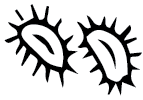

more super futures together

We are design researchers who produce more super work together than apart. Based in Toronto, Canada, we work for transitions to just, relational, sustainable futures.
We practice radical collaboration, critical reflection, and use design methods and mindsets to inform strategies for social change. Our creative facilitation helps communities and organizations design for themselves and with each other. We are available for consultations, strategic planning, problem framing, creative engagements, co-design workshops, experimental visioning and visualization, and multimedia storytelling.
Superorganism is run by Ariana Lutterman & Tara Campbell. Find us on social media and say hello: Twitter, Instagram.